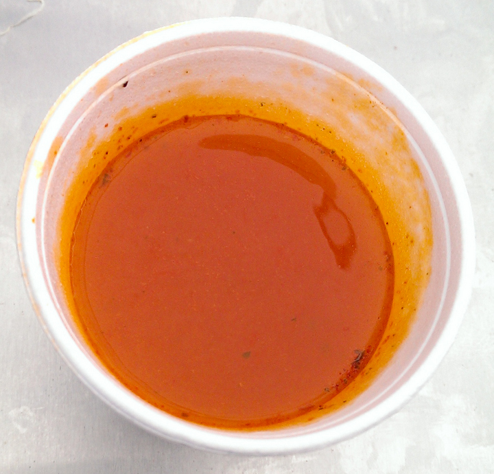
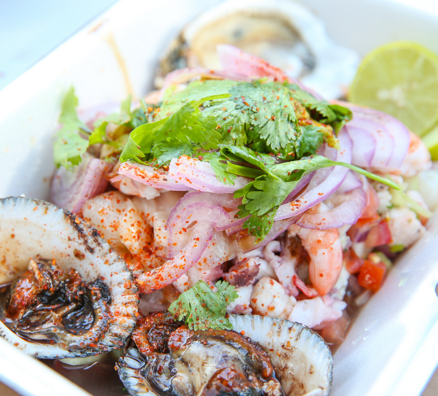
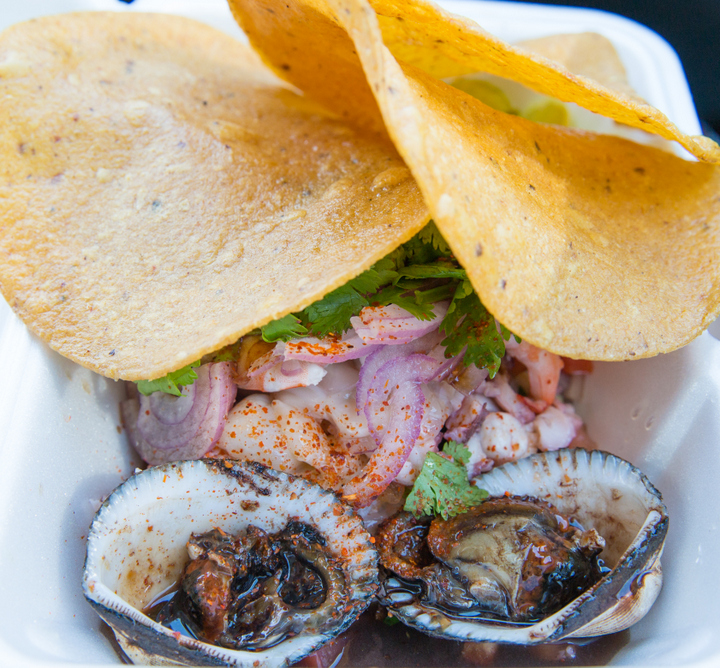
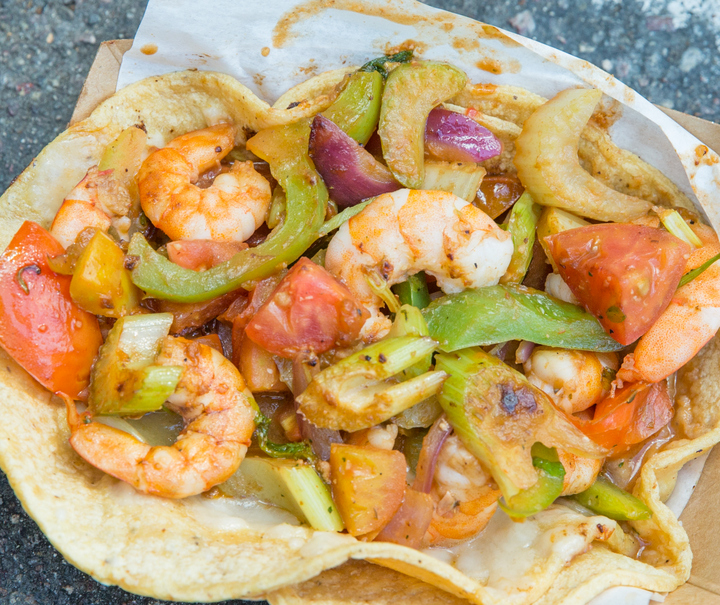
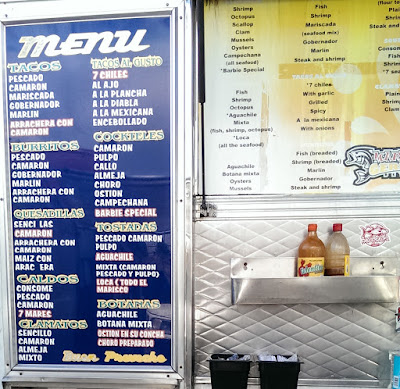

Fish Tacos (Taco Gobernador)
Crispy fish tacos including the taco gobernador, a Baja-coast classic done right.
San Felipe-style Mexican seafood, served from a Federal Blvd lonchera since 2000, credited as San Diego's first seafood truck.
Mariscos German is a family-run mariscos operation from San Felipe, Baja California, established in 2000 and credited as the first seafood lonchera (seafood truck) in San Diego. We're known for crispy fish and shrimp tacos, marlin tacos, ceviche, clams, oysters, pata de mula, and aguachiles, plus a complimentary cup of hot seafood consomé handed to customers while they wait.
We're a cult favorite among San Diego taco-truck fans, written up by food blogs like Kirbie's Cravings, and we're proud to still be slinging the same Baja-coast flavors on Federal Blvd today.

On the house, every visit SinceEverything comes straight off the truck window, the same style of mariscos you'd find on the beach in San Felipe.
Crispy fish tacos including the taco gobernador, a Baja-coast classic done right.
Bright, citrus-cured ceviche and spicy aguachile piled high on crunchy tostadas.
Shucked-to-order oysters and clams, including the beloved pata de mula.
Hearty shrimp cocktails and mixed mariscos plates loaded with the day's catch.
Smoky marlin tacos and surf-and-turf seafood burritos (mar y tierra).
A hot cup of seafood consomé is handed to customers while they wait, on the house.
Real shots from the Federal Blvd truck, the tostadas, the tacos, and the consomé that keeps people coming back.




A few honest answers before you roll up to the window.
Payment options can vary at food trucks and may change day to day. The safest bet is to call ahead at (619) 540-7822 to confirm current payment methods before you head over.
As a lonchera-style food truck, seating is typically informal and limited to whatever counter or curbside space is set up trackside on Federal Blvd. It's built for grab-and-go or a quick stand-up bite.
Mariscos-style Mexican seafood ranges from mild ceviche to spicier aguachile and "a la diabla" preparations, so there's a range on the menu. If you're heat-sensitive, ask at the window which items run mild versus spicy.
For catering, large group orders, or anything outside a typical window order, call (619) 540-7822 directly and ask, they can tell you what's possible.
Mariscos German is based at 4724 Federal Blvd in the Lincoln Park / Southeast San Diego neighborhood. As with any food truck, it's smart to call ahead at (619) 540-7822 if you're making a special trip.
Roll up on Federal Blvd any day of the week, the window opens at 9am.
4724 Federal Blvd, San Diego, CA 92102
Lincoln Park / Southeast San Diego
Active listings on Yelp, Yahoo Local, Apple Maps, BBB, and Facebook.
| Day | Hours |
|---|---|
| Monday | 9:00 AM, 7:00 PM |
| Tuesday | 9:00 AM, 7:00 PM |
| Wednesday | 9:00 AM, 7:00 PM |
| Thursday | 9:00 AM, 7:00 PM |
| Friday | 9:00 AM, 7:00 PM |
| Saturday | 9:00 AM, 7:00 PM |
| Sunday | 9:00 AM, 7:00 PM |
Open daily, 9am to 7pm.